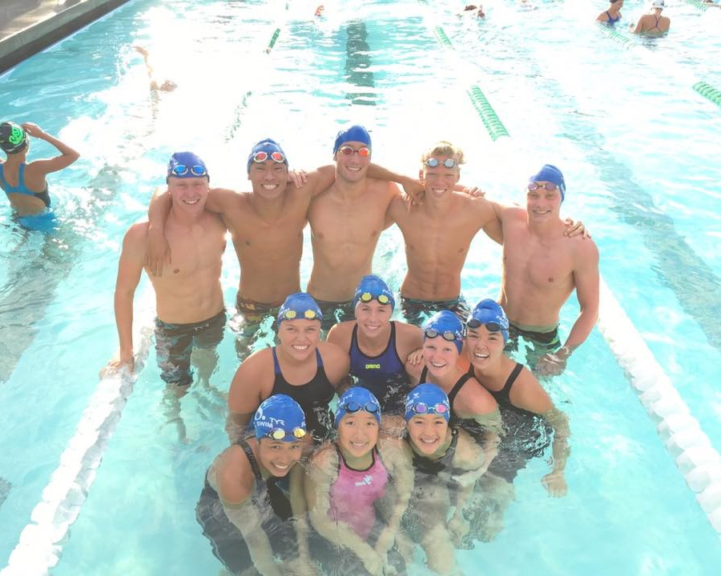
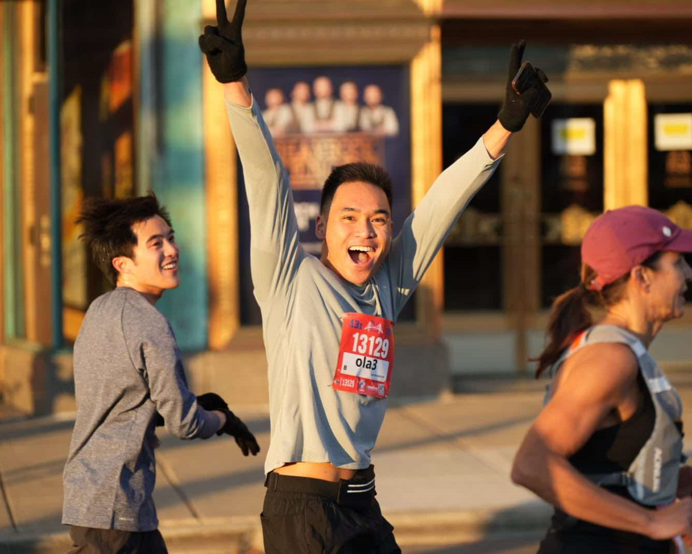
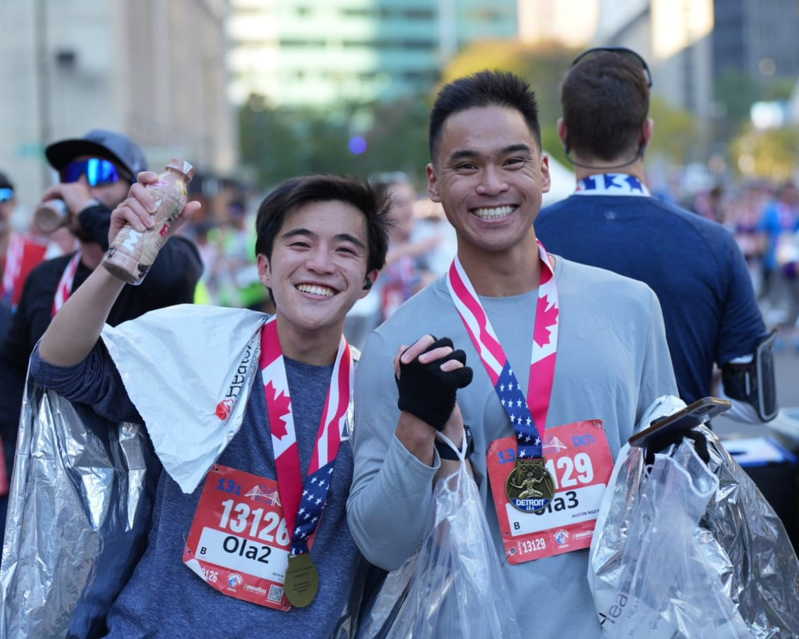
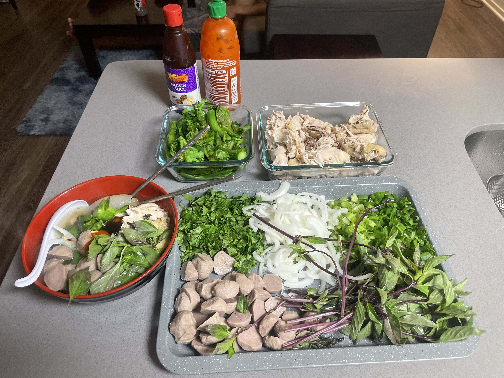
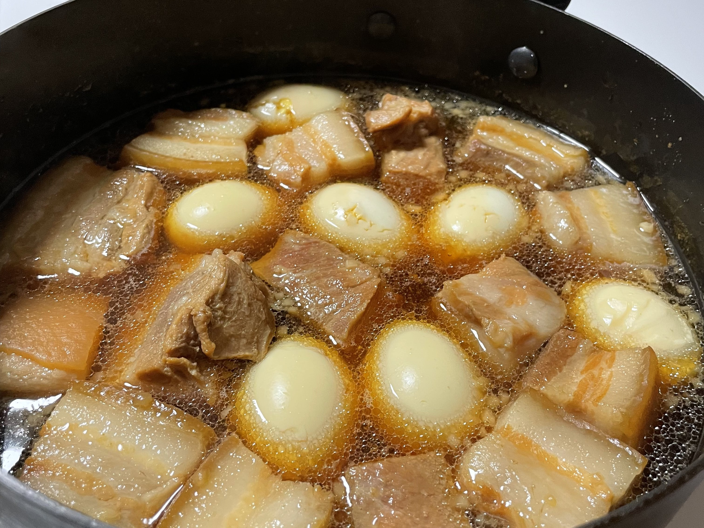
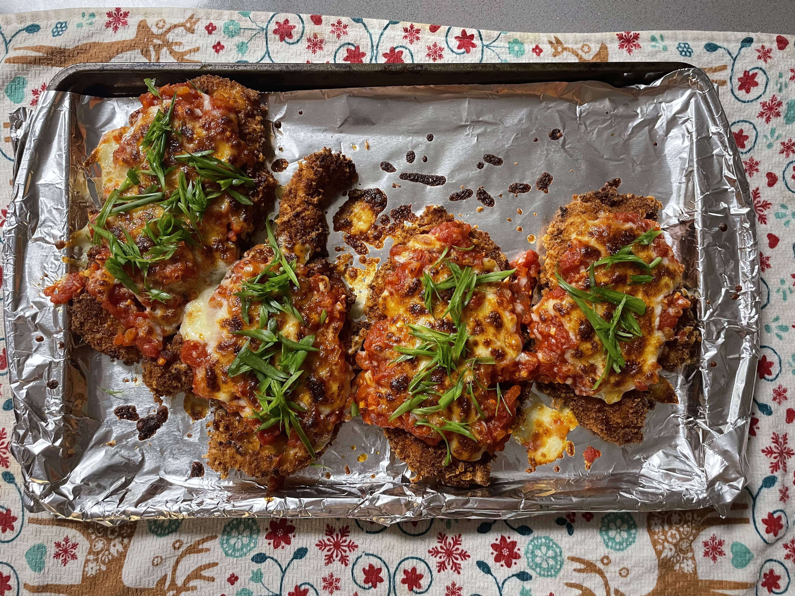
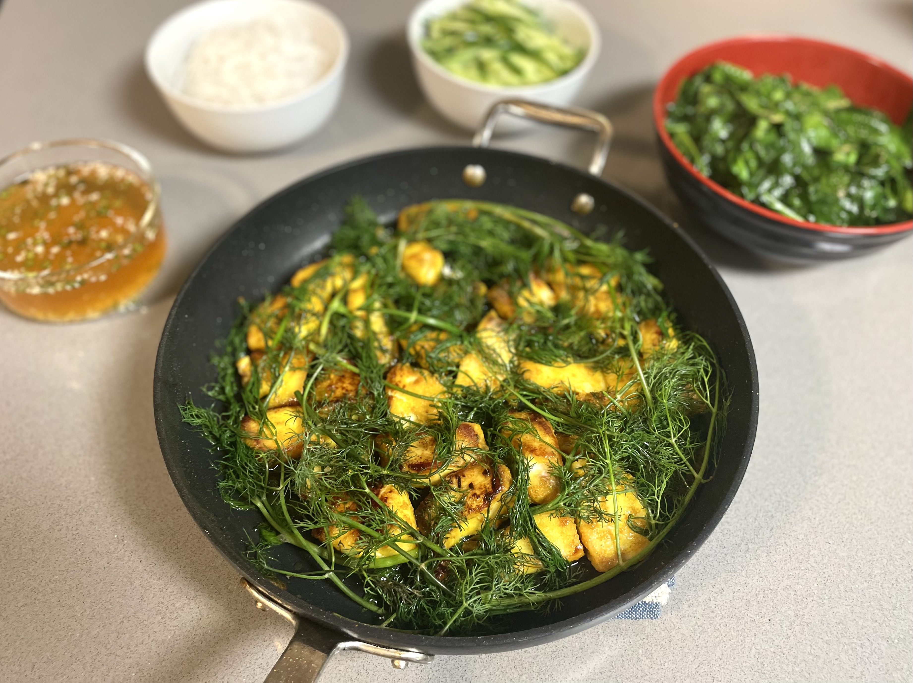
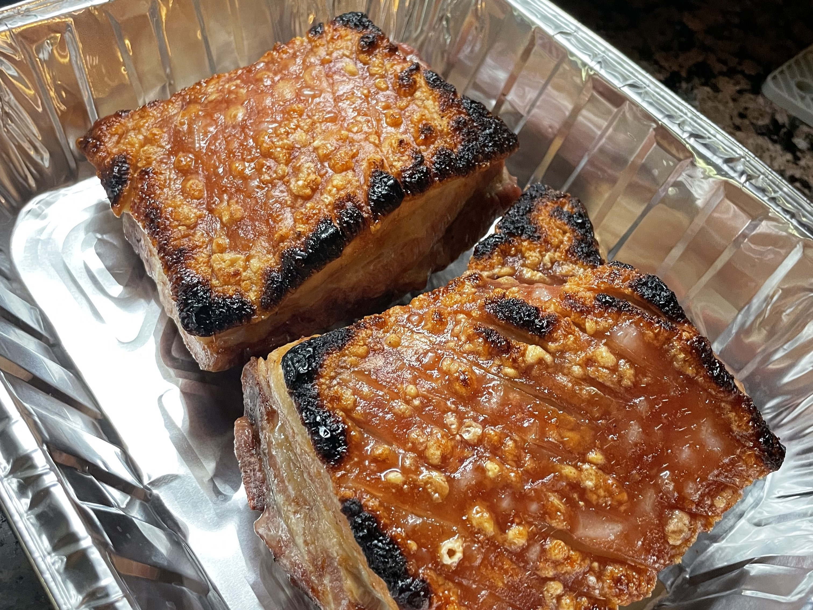

About Me

Hello Visitor
My name is Austin. I am currently a PhD candidate at the University of Michigan, Ann Arbor advised by Michael Wellman. Born and raised in San Diego, CA, I was happily spoiled by good weather, food, and company. I'm grateful to be involved in hobbies, communities, and a profession that I truly love, and I know many of my blessings are owed to my upbringing. Thank you to all who have helped me get to where I am today.

Things I Love
- Friends, family, and food
- Getting competitive (video/board games, sports)
- Composing, playing, and listening to music
Oh Dear Lord
- Insects, spiders, and the works
- High temps and humidity
- Velcro
My Stays
Berkeley, CA
UC Berkeley and Gap Year
 copy.jpg)
Ann Arbor, MI
University of MIchigan, PhD Candidate :D

Always Moving
I would consider myself a pretty active guy. When I'm not working, you can pretty reliably find me in the pool, on the wall, or, most recently, on the track. Both physically and mentally, exercise has always been a fulfilling part of my life. Plus, it gives more chances to spend time with those I love, who also happen to enjoy the same things I do.Miss swim? Yes. Miss 15+ hours of practice/week? No.






October 2024: Completed Detroit-Windsor Half-Marathon
Always Hanging
I need to remind myself sometimes that it's important to take breaks. I owe a lot of my happiness, aspirations, and, quite frankly, sanity to the people I'm so very grateful to have in my life. Here are some snippets of my favorite moments in recent memory. I have an entire dedicated page to my community if you click below.Click here to see my community.


Always Cooking
If I'm not exercising or working, you can almost always find me cooking. If I'm not cooking, I am likely eating. Food has always been a love language for me, both love I give to myself and to others. Yes, it's quite relaxing and gives me a burst of dopamine,
but nothing gives me more joy than being able to cook for others...half because I cook absurdly large portions sometimes and food waste is one of my biggest pet peeves.
Click here to take a look at my WIP cookbook.
If you want to learn more about my cooking journey, click the link above! Cooking is not just a very grounding activity for me but also an outlet for my creativity. Even though I've made many "mistakes" when cooking before, the hobby is nice because feel like there are generally very little wrong answers (usually).
Here are a few snippets of things I've enjoyed making these past few years.






Always Bopping
Lastly, music has always been a core part of my upbringing. I recently rediscovered my love for music, and I'm grateful I did. It's such a fun mode of self-expression...being able to tell a story in a way that trancends language. I think a lot of what makes music precious to me is being able to connect with my peers by crafting art together or, sometimes, dedicating compositions to those I love.Piano, viola and composition since childhood. :3